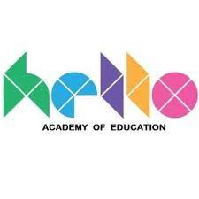
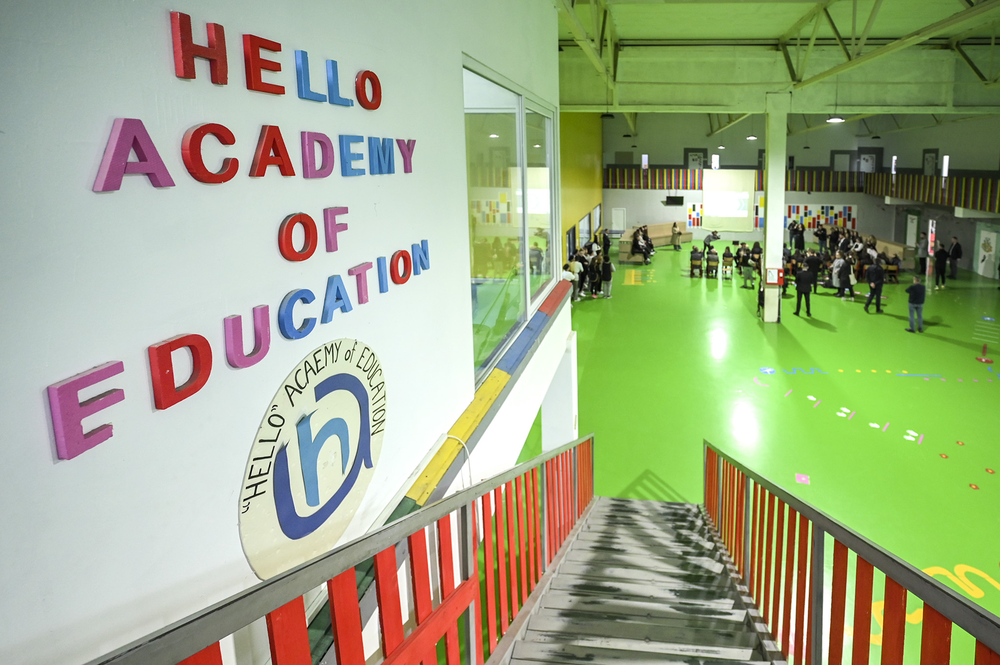
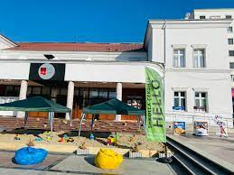
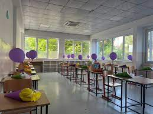

Shkolla "Hello Academy of Education" ne Gjilan operon tash e shtate vite me radhe duke arritur te behet shkolla e pare moderne dhe inovative ne rajon dhe me gjere. Shkolla Hello u hap per her te pare me daten 01.09.2017 ne qytetin e Gjilanit, ne nje objekt te vogel por me shume nxenes te regjitruar ku qe ne vitin e pare ai objekt nuk i plotesoi kushtet per nje shkolle moderne siq synoi shkolla Hello. Keshtu ne vitin e dyte numri i regjistrimit te nxenesve u trefishua duke arritur numri nga 100 nxenes te regjistroheshin 400 e me shume nxenes. Shkolla Hello nderroi lokacion duke e vere ne funksion keshtu nje pjese te vjeter te fabrikes se tekstilit e cila operio per shume vite ne qeytetin tone. por shkolla nderroi ngjyrat dhe infrastukturen duke sjell ne qytet nje shkolle moderne dhe bashkohore. Më poshtë do t'i listojmë disa prej benefiteve të cilat i gëzuan nxënësit tanë të këtij niveli shkollor në vitin që lam pas: - Planprograme që plotësohen çdo vit me lëndë ende të pandëgjuara në shtetin tonë si: Matematikë logjike nga klasa e parë, Teknologji nga klasa e parë (kodim dhe programim nga klasa e pestë), Kreativitet të bazuar në STEM, Inxhinieri, Gjuhë Gjermane nga klasa e pestë etj. - Aktivite të veçanta me të cilat krijuam përvoja jetësore si: kamping në mal, skijim ne Brezovicë, lundrim me anije, vizitë në pishinë të hapur e të mbullur, peshkim, bjeshkatari, vizita në teater, vizita në muze, Spelling Bee, turne sportiv, gara të diturisë, etj. - Mësimdhënës profesional dhe të kohës. Çdo lëndë mbahet nga mësimdhënës të veçant për secilën lëndë që nga klasa e parë deri në të nëntën, kjo e bënë të mësuarit aktiv dhe atraktiv ku për nxënës ka freski pas çdo ore mësimore. - Orari i gjatë nga ora 7:30-17:00. Nxënësit që kalojnë disa vite në qëndrim 7-8 orë në shkollë do të kaliten për një orar pune në të ardhmen sakaq nuk do ta kenë fare problem anagzhimin në orar të gjatë. - Kurse të ndryshme nga klasa e parë deri në të nëntën si: Gjuhë Angleze, Gjuhë Shqipe, Matematikë. Nga klasa gjashtë deri tek e nënta kurse si Programim, Inxhinjeri, Fizikë, Kimi, Biologji etj - Klube të ndryshme si Multimedia, Fashion Dizajn, Futboll, Basketboll, Volejboll, Art, Muzikë… së shpejti edhe klubin e Aktrimit. - Ushqim në shkollë me dy shujta ushqim dhe një desert. - Transport nga të gjitha lagjet e qytetit e gjithashtu nga fshatrat si Pozhorani, Kllokoti, Zhitia, Radivojci, Devaja, Budrika, Cënica, Livoqi, Zhegra, Llashtica, Lladova, Pasjaku … dhe kudo që ndërtohet linja e rregullt… shpresojmë që së shpejti të fillohet me Kamenicën. - Vizita të ndryshme brenda dhe jasht vendit si në Tiranë, Shkup, Prishtinë, Vlorë, Krujë, Berat, Prizren, Peje, Gjakovë, Ferizaj, Prekaz, Mirushë, Gadime, Badovc, ku në disa raste shkolla e mori përsipër komplet organizimin, por në shumë raste së bashku me prindërit. - Në planifikim ishin por edhe disa aktivitete të ndryshme por që do të vijojnë gjatë vitit si: Panairi i ndërmarrsisë, Java e Shkencës, Olimpiada Mësimore dhe shumë gjera të tjera. Të gjitha këto në një pagesë përbashkët…Jo pak për një shkollë fillore.
   